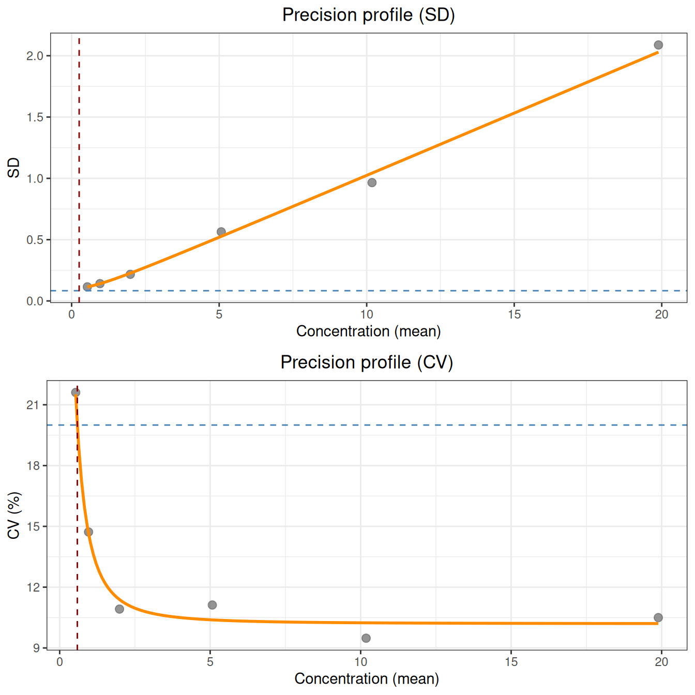

Code
library(ivdtools)
library(readr)Analytical sensitivity describes the ability of a measurement system to distinguish “signal from noise” at the low-concentration end, and consists of three progressively increasing limits:
This document demonstrates how to compute analytical sensitivity with the lob_lod_loq() function of the ivdtools package according to CLSI EP17-A2:
LoB = M_B + cp·SD_B, pooling all blank results into one pool, with cp = 1.645/√(1 − 1/(4(B−K))) the small-sample-adjusted 95% one-sided quantile (B is the total number of blank results, K the number of blank samples).X = LoB + cp·SD_WL(X), with cp = 1.645/√(1 − 1/(4(N_TOT−K))).√Var(X)/X = target_cv. This LoQ reflects only precision and does not include bias.The example data are deterministic teaching data used only to demonstrate the workflow; formal studies must use the experimental design, target concentration, and acceptance criteria pre-specified in the protocol or standard.
library(ivdtools)
library(readr)| Function | Main purpose | Key input or output |
|---|---|---|
lob_lod_loq() |
Compute LoB / LoD / LoQ in one call | Summarized data, blank sample names, target CV |
replicate_to_mean() |
Summarize replicate measurements | Mean, SD, replicate count n |
fit_equation() |
Fit the Sadler precision profile (called internally) | eq="sadler", df_col |
print() / plot() |
Result display | Tabular summary, SD/CV dual panels |
The input to lob_lod_loq() is an already summarized data.frame: one row per sample, containing a sample-name column, a mean column (i.e., concentration), an SD column, and a replicate-count n column; the column names can be freely specified. It internally and automatically completes the optimal Sadler model fitting, so no manual fitting is required.
The data contain 2 blank samples (blank_A, blank_B) and 6 low-concentration samples (L1–L6), each with replicate measurements (40 for each blank, 30 for each low concentration), for a total of 260 rows. The SD increases with concentration, consistent with the common low-end situation of “variance increasing with the mean”:
sens <- read_csv("./data/sensitivity.csv", show_col_types = FALSE)
sens <- as.data.frame(sens)
str(sens)'data.frame': 260 obs. of 2 variables:
$ sample: chr "blank_A" "blank_A" "blank_A" "blank_A" ...
$ value : num 0.024 -0.006 0.055 -0.072 0.057 -0.023 -0.05 0.003 0.051 0.029 ...dim(sens)[1] 260 2table(sens$sample)
blank_A blank_B L1 L2 L3 L4 L5 L6
40 40 30 30 30 30 30 30 Use replicate_to_mean() to group by sample name and compute the mean, SD, and replicate count (when the grouping variable is character, the original values are retained, so each blank occupies one row):
rep <- replicate_to_mean(data.frame(x = sens$sample, y = sens$value),
x = "x", y = "y")
rep$sample <- rep$x
rep$mean <- rep$y_mean
rep$sd <- rep$y_sd
rep$n <- rep$y_n
rep[c("sample", "mean", "sd", "n")]Note:
lob_lod_loq()requires the variance model response to be the variance and weighted by degrees of freedom, so after summarizing you also need to add the two columnsvar = sd^2anddf = n − 1to each row before passing them tolob_lod_loq(). If your data already contain these two columns, this step is unnecessary.
The blank parameter specifies the blank sample names (multiple allowed), and target_cv specifies the precision target for LoQ:
summ <- rep[c("sample", "mean", "sd", "n")]
res <- lob_lod_loq(summ, sample_col = "sample", mean_col = "mean",
sd_col = "sd", n_col = "n",
blank = c("blank_A", "blank_B"), target_cv = 0.20)
resLimit of Blank / Detection / Quantitation (EP17-A2)
Precision profile: Sadler; best model = Model_3
Equation : sigma^2 = b1 + b2 * mu^2
Parameters : b1 = 0.010196, b2 = 0.010388
Fit : AIC = -479.4; RSS = 0.08315; GoF p = 0.9437
LoB (parametric, B = 80, K = 2) : 0.08357
LoD (fixed-point) : 0.2552
LoQ (CV = 20%) : 0.5868
Note: LoQ is based on precision ONLY; bias is not included.Interpreting the results:
X = LoB + cp·SD(X) on the precision profile, i.e., measurements above this concentration can be judged “non-blank”.lob_lod_loq() returns a sensitivity object, with each limit and parameter stored as a named component:
str(res, max.level = 1)List of 13
$ call : language lob_lod_loq(data = summ, sample_col = "sample", mean_col = "mean", sd_col = "sd", n_col = "n", blank = c("bl| __truncated__
$ lob : num 0.0836
$ lod : num 0.255
$ loq : num 0.587
$ n_blank : int 80
$ B : int 80
$ K : int 2
$ target_cv: num 0.2
$ cp_lob : num 1.65
$ cp_lod : num 1.65
$ fit :List of 12
..- attr(*, "class")= chr "fit_equation"
$ model : chr "Model_3"
$ notes : chr(0)
- attr(*, "class")= chr "sensitivity"res$lob[1] 0.0835705res$lod[1] 0.2552205res$loq[1] 0.5867594res$B[1] 80res$K[1] 2res$cp_lob[1] 1.647643res$cp_lod[1] 1.646183res$model[1] "Model_3"cp_lob and cp_lod are the two small-sample correction factors of EP17; model is the optimal Sadler model selected by AIC (in this example, model 3, the mixed-variance type).
plot() draws the two precision-profile panels for SD and CV, overlays the LoB / LoD / LoQ reference lines, and visually shows the geometric meaning of each limit:
plot(res)
If there are no low-concentration levels, only LoB is computed, and LoD / LoQ are NA:
res_b <- lob_lod_loq(summ[summ$sample %in% c("blank_A", "blank_B"), ],
sample_col = "sample", mean_col = "mean",
sd_col = "sd", n_col = "n",
blank = c("blank_A", "blank_B"))
res_bLimit of Blank / Detection / Quantitation (EP17-A2)
LoB (parametric, B = 80, K = 2) : 0.08357
LoD (fixed-point) : --
LoQ (CV = 20%) : --
Note: LoQ is based on precision ONLY; bias is not included.If there are no blank samples (blank = NULL), only LoQ is computed, and LoB / LoD are NA:
res_q <- lob_lod_loq(summ[!summ$sample %in% c("blank_A", "blank_B"), ],
sample_col = "sample", mean_col = "mean",
sd_col = "sd", n_col = "n")
res_qLimit of Blank / Detection / Quantitation (EP17-A2)
Precision profile: Sadler; best model = Model_3
Equation : sigma^2 = b1 + b2 * mu^2
Parameters : b1 = 0.010196, b2 = 0.010388
Fit : AIC = -479.4; RSS = 0.08315; GoF p = 0.9437
LoB (parametric, B = 0, K = 0) : --
LoD (fixed-point) : --
LoQ (CV = 20%) : 0.5868
Note: LoQ is based on precision ONLY; bias is not included.When the LoQ computed from the target CV is below the LoD (for example, large blank noise but good precision at low concentrations), LoQ takes max(LoQ, LoD) and issues a warning, ensuring LoQ ≥ LoD:
# Construct data with "large blank noise but good low-concentration precision"
d_noisy <- data.frame(
sample = c("blank", paste0("L", 1:6)),
mean = c(0, 0.5, 1, 2, 5, 10, 20),
sd = c(5, sqrt(0.01 + 0.02 * c(0.5, 1, 2, 5, 10, 20)^2)),
n = c(30L, rep(5L, 6))
)
res_n <- lob_lod_loq(d_noisy, sample_col = "sample", mean_col = "mean",
sd_col = "sd", n_col = "n", blank = "blank")
res_nLimit of Blank / Detection / Quantitation (EP17-A2)
Precision profile: Sadler; best model = Model_3
Equation : sigma^2 = b1 + b2 * mu^2
Parameters : b1 = 0.01, b2 = 0.02
Fit : AIC = -469.2; RSS = 2.924e-29; GoF p = 1
LoB (parametric, B = 30, K = 1) : 8.261
LoD (fixed-point) : 10.79
LoQ (CV = 20%) : 10.79
Note: LoQ is based on precision ONLY; bias is not included.
Note: LoQ (precision) < LoD; LoQ reported as LoD = 10.79.cp includes a B−K degrees-of-freedom correction that cannot be ignored when the sample size is small.max.lob_lod_loq() is an already-summarized data.frame; the original replicate data must first be processed by replicate_to_mean().